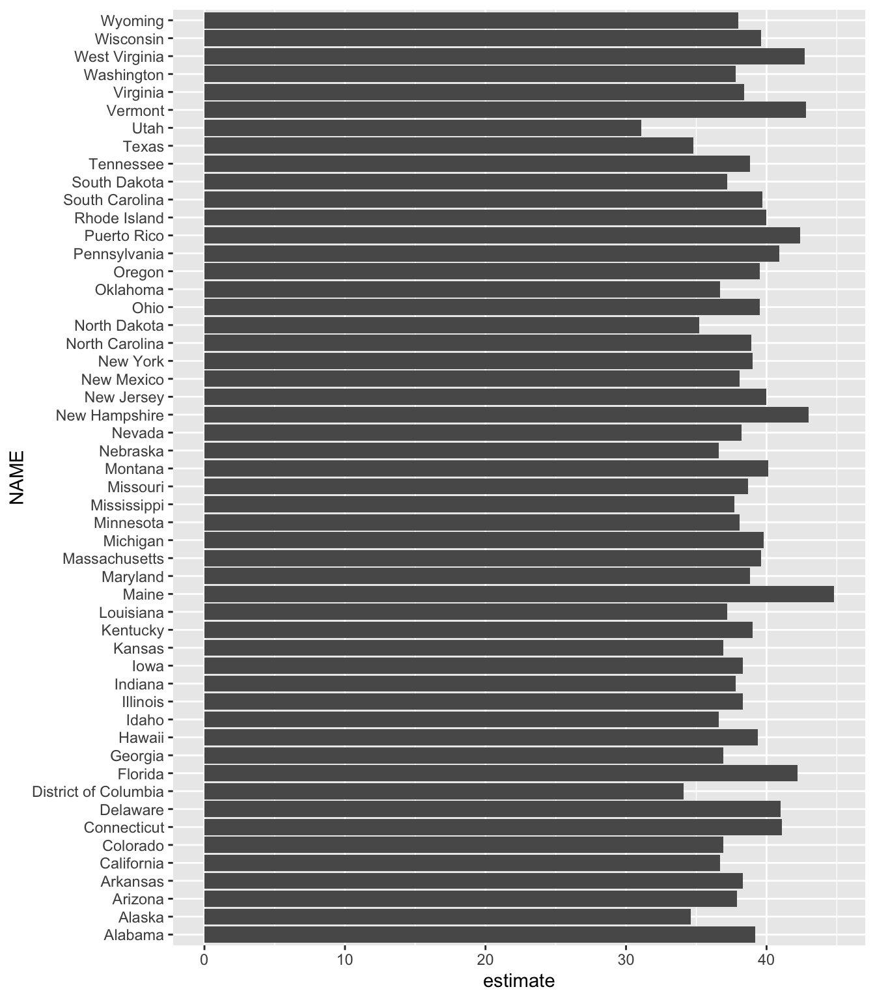

11 Automatically Accesing Online Data
So far, you’ve imported data into your projects from CSV files. Many online datasets allow you to export CSVs, but before you do so, you should look for packages to automate your data access. If you can eliminate the manual steps involved in fetching data, your analysis and reporting will be more accurate. You’ll also be able to efficiently update your report when the data changes.
R offers many ways to automate the process of accessing online data. In this chapter, I’ll discuss two such approaches. First, you will use the googlesheets4 package to fetch data directly from Google Sheets. You’ll learn how to connect your R Markdown project to Google so you can automatically download data when a Google Sheet updates. Then, you’ll use the tidycensus package to access data from the US Census Bureau. You’ll work with two large census datasets, the Decennial Census and the American Community Survey, and practice visualizing them.
Importing Data from Google Sheets with googlesheets4
By using the googlesheets4 package to access data directly from Google Sheets, you avoid having to manually download data, copy it into your project, and adjust your code so it imports that new data every time you want to update a report. This package lets you write code that automatically fetches new data directly from Google Sheets. Whenever you need to update your report, you can simply run your code to refresh the data. In addition, if you work with Google Forms, you can pipe your data into Google Sheets, completely automating the workflow from data collection to data import.
Using the googlesheets4 package can help you manage complex datasets that update frequently. For example, in her role at the Primary Care Research Institute at the University of Buffalo, Meghan Harris used it for a research project about people affected by opioid use disorder. The data came from a variety of surveys, all of which fed into a jumble of Google Sheets. Using googlesheets4, Harris was able to collect all of her data in one place and use R to put it to use. Data that had once been largely unused because accessing it was so complicated could now inform research on opioid use disorder.
This section demonstrates how the googlesheets4 package works using a fake dataset about video game preferences that Harris created to replace her opioid survey data (which, for obvious reasons, is confidential).
Connecting to Google
To begin, install the googlesheets4 package by running install.packages ("googlesheets4"). Next, connect to your Google account by running the gs4_auth() function in the console. If you have more than one Google account, select the account that has access to the Google Sheet you want to work with.
Once you do so, a screen should appear. Check the box next to See, Edit, Create, and Delete All Your Google Sheets Spreadsheets. This will ensure that R can access data from your Google Sheets account. Click Continue, and you should see the message “Authentication complete. Please close this page and return to R.” The googlesheets4 package will now save your credentials so that you can use them in the future without having to reauthenticate.
Reading Data from a Sheet
Now that you’ve connected R to your Google account, you can import the fake data that Harris created about video game preferences (access it at https://data.rfortherestofus.com/google-sheet). Figure 11.1 shows what it looks like in Google Sheets.
The googlesheets4 package has a function called read_sheet() that allows you to pull in data directly from a Google Sheet. Import the data by passing the spreadsheet’s URL to the function like so:
library(googlesheets4)
survey_data_raw <- read_sheet("https://docs.google.com/spreadsheets/d/1AR0_RcFBg8wdiY4Cj-k8vRypp_txh27MyZuiRdqScog/edit?usp=sharing")Take a look at the survey_data_raw object to confirm that the data was imported. Using the glimpse() function from the dplyr package makes it easier to read:
The glimpse() function, which creates one output row per variable, shows that you’ve successfully imported the data directly from Google Sheets:
Rows: 5
Columns: 5
$ Timestamp <dttm> 2022-05-16 15:20:50, 2022-05-16 15:…
$ `How old are you?` <chr> "25-34", "45-54", "Under 18", "Over …
$ `Do you like to play video games` <chr> "Yes", "No", "Yes", "No", "Yes"
$ `What kind of games do you like?` <chr> "Sandbox, Role-Playing (RPG), Simula…
$ `What's your favorite game?` <chr> "It's hard to choose. House Flipper …Once you have the data in R, you can use the same workflow you’ve been using to create reports with R Markdown.
Using the Data in R Markdown
The following code is taken from an R Markdown report that Harris made to summarize the video games data. You can see the YAML, the setup code chunk, a code chunk that loads packages, and the code to import data from Google Sheets:
---
title: "Video Game Survey"
output: html_document
---
```{r setup, include=FALSE}
knitr::opts_chunk$set(
echo = FALSE,
warning = FALSE,
message = FALSE
)
```
```{r}
library(tidyverse)
library(janitor)
library(googlesheets4)
library(gt)
```
```{r}
# Import data from Google Sheets
survey_data_raw <- read_sheet("https://docs.google.com/spreadsheets/d/1AR0_RcFBg8wdiY4Cj-k8vRypp_txh27MyZuiRdqScog/edit?usp=sharing")
```This R Markdown document resembles those discussed in previous chapters, except for the way you import the data. Because you’re bringing it in directly from Google Sheets, there’s no risk of, say, accidentally reading in the wrong CSV. Automating this step reduces the risk of error.
The next code chunk cleans the survey_data_raw object, saving the result as survey_data_clean:
```{r}
# Clean data
survey_data_clean <- survey_data_raw %>%
clean_names() %>%
mutate(participant_id = as.character(row_number())) %>%
rename(
age = how_old_are_you,
like_games = do_you_like_to_play_video_games,
game_types = what_kind_of_games_do_you_like,
favorite_game = whats_your_favorite_game
) %>%
relocate(participant_id, .before = age) %>%
mutate(age = factor(age, levels = c("Under 18", "18-24", "25-34", "35-44", "45-54", "55-64", "Over 65")))
```Here, the clean_names() function from the janitor package makes the variable names easier to work with. Defining a participant_id variable using the row_number() function then adds a consecutively increasing number to each row, and the as.character() function makes the number a character. Next, the code changes several variable names with the rename() function. The mutate() function then transforms the age variable into a data structure known as a factor, which ensures that age will show up in the right order in your chart. Finally, the relocate() function positions participant_id before the age variable.
Now you can use the glimpse() function again to view your updated survey_data_clean data frame, which looks like this:
Rows: 5
Columns: 6
$ timestamp <dttm> 2022-05-16 15:20:50, 2022-05-16 15:21:28, 2022-05-16 1…
$ participant_id <chr> "1", "2", "3", "4", "5"
$ age <fct> 25-34, 45-54, Under 18, Over 65, Under 18
$ like_games <chr> "Yes", "No", "Yes", "No", "Yes"
$ game_types <chr> "Sandbox, Role-Playing (RPG), Simulation and sports, Pu…
$ favorite_game <chr> "It's hard to choose. House Flipper and Parkitect are m…The rest of the report uses this data to highlight various statistics:
# Respondent Demographics
```{r}
# Calculate number of respondents
number_of_respondents <- nrow(survey_data_clean)
```
We received responses from `r number_of_respondents` respondents. Their ages are below.
```{r}
survey_data_clean %>%
select(participant_id, age) %>%
gt() %>%
cols_label(
participant_id = "Participant ID",
age = "Age"
) %>%
tab_style(
style = cell_text(weight = "bold"),
locations = cells_column_labels()
) %>%
cols_align(
align = "left",
columns = everything()
) %>%
cols_width(
participant_id ~ px(200),
age ~ px(700)
)
```
# Video Games
We asked if respondents liked video games. Their responses are below.
```{r}
survey_data_clean %>%
count(like_games) %>%
ggplot(aes(
x = like_games,
y = n,
fill = like_games
)) +
geom_col() +
scale_fill_manual(values = c(
"No" = "#6cabdd",
"Yes" = "#ff7400"
)) +
labs(
title = "How Many People Like Video Games?",
x = NULL,
y = "Number of Participants"
) +
theme_minimal(base_size = 16) +
theme(
legend.position = "none",
panel.grid.minor = element_blank(),
panel.grid.major.x = element_blank(),
axis.title.y = element_blank(),
plot.title = element_text(
face = "bold",
hjust = 0.5
)
)
```These sections calculate the number of survey respondents, then put this value in the text using inline R code; create a table that breaks down the respondents by age group; and generate a graph displaying how many respondents like video games. Figure 11.2 shows the resulting report.

You can rerun the code at any point to fetch updated data. The survey had five responses today, but if you run it again tomorrow and it has additional responses, they will be included in the import. If you used Google Forms to run your survey and saved the results to a Google Sheet, you could produce this up-to-date report simply by clicking the Knit button in RStudio.
Importing Only Certain Columns
In the previous sections, you read the data of the entire Google Sheet, but you also have the option to import only a section of a sheet. For example, the survey data includes a timestamp column. This variable is added automatically whenever someone submits a Google Form that pipes data into a Google Sheet, but you don’t use it in your analysis, so you could get rid of it.
To do so, use the range argument in the read_sheet() function when importing the data like so:
read_sheet(
"https://docs.google.com/spreadsheets/d/1AR0_RcFBg8wdiY4Cj-k8vRypp_txh27MyZuiRdqScog/edit?usp=sharing",
range = "Sheet1!B:E"
) %>%
glimpse()This argument lets you specify a range of data to import. It uses the same syntax you may have used to select columns in Google Sheets. In this example, range = "Sheet1!B:E" imports columns B through E (but not A, which contains the timestamp). Adding glimpse() and then running this code produces output without the timestamp variable:
Rows: 5
Columns: 4
$ `How old are you?` <chr> "25-34", "45-54", "Under 18", "Over …
$ `Do you like to play video games` <chr> "Yes", "No", "Yes", "No", "Yes"
$ `What kind of games do you like?` <chr> "Sandbox, Role-Playing (RPG), Simula…
$ `What's your favorite game?` <chr> "It's hard to choose. House Flipper …There are a number of other useful functions in the googlesheets4 package. For example, if you ever need to write your output back to a Google Sheet, the write_sheet() function is there to help. To explore other functions in the package, check out its documentation website at https://googlesheets4.tidyverse.org/index.html.
Now we’ll turn our attention to another R package that allows you to automatically fetch data, this time from the US Census Bureau.
Accessing Census Data with tidycensus
If you’ve ever worked with data from the US Census Bureau, you know what a hassle it can be. Usually, the process involves visiting the Census Bureau website, searching for the data you need, downloading it, and then analyzing it in your tool of choice. This pointing and clicking gets very tedious after a while.
Kyle Walker, a geographer at Texas Christian University, and Matt Herman (creator of the Westchester COVID-19 website discussed in Chapter 9) developed the tidycensus package to automate the process of importing Census Bureau data into R. With tidycensus, you can write just a few lines of code to get data about, say, the median income in all counties in the United States.
In this section, I’ll show you how the tidycensus package works using examples from two datasets to which it provides access: the Decennial Census, administered every 10 years, and the annual American Community Survey. I’ll also show you how to use the data from these two sources to perform additional analysis and make maps by accessing geospatial and demographic data simultaneously.
Connecting to the Census Bureau with an API Key
Begin by installing tidycensus using install.packages("tidycensus"). To use tidycensus, you must get an application programming interface (API) key from the Census Bureau. API keys are like passwords that online services use to determine whether you’re authorized to access data.
To obtain this key, which is free, go to https://api.census.gov/data/key_signup.html and enter your details. Once you receive the key by email, you need to put it in a place where tidycensus can find it. The census_api_key() function does this for you, so after loading the tidycensus package, run the function as follows, replacing 123456789 with your actual API key:
library(tidycensus)
census_api_key("123456789", install = TRUE)The install = TRUE argument saves your API key in your .Renviron file, which is designed for storing confidential information. The package will look for your API key there in the future so that you don’t have to reenter it every time you use the package.
Now you can use tidycensus to access Census Bureau datasets. While the Decennial Census and the American Community Survey are the most common, Chapter 2 of Kyle Walker’s book Analyzing US Census Data: Methods, Maps, and Models in R discusses others you can access.
Working with Decennial Census Data
The tidycensus packages includes several functions dedicated to specific Census Bureau datasets, such as get_decennial() for Decennial Census data. To access data from the 2020 Decennial Census about the Asian population in each state, use the get_decennial() function with three arguments as follows:
get_decennial(
geography = "state",
variables = "P1_006N",
year = 2020
)Setting the geography argument to “state” tells get_decennial() to access data at the state level. In addition to the 50 states, it will return data for the District of Columbia and Puerto Rico. The variables argument specifies the variable or variables you want to access. Here, P1_006N is the variable name for the total Asian population. I’ll discuss how to identify other variables you may want to use in the next section. Finally, year specifies the year for which you want to access data — in this case, 2020.
Running this code returns the following:
# A tibble: 52 × 4
GEOID NAME variable value
<chr> <chr> <chr> <dbl>
1 42 Pennsylvania P1_006N 510501
2 06 California P1_006N 6085947
3 54 West Virginia P1_006N 15109
4 49 Utah P1_006N 80438
5 36 New York P1_006N 1933127
6 11 District of Columbia P1_006N 33545
7 02 Alaska P1_006N 44032
8 12 Florida P1_006N 643682
9 45 South Carolina P1_006N 90466
10 38 North Dakota P1_006N 13213
# ℹ 42 more rowsThe resulting data frame has four variables. GEOID is the geographic identifier assigned to the state by the Census Bureau. Each state has a geographic identifier, as do all counties, census tracts, and other geographies. NAME is the name of each state, and variable is the name of the variable you passed to the get_decennial() function. Finally, value is the numeric value for the state and variable in each row. In this case, it represents the total Asian population in each state.
Identifying Census Variable Values
You’ve just seen how to retrieve the total number of Asian residents of each state, but say you want to calculate that number instead as a percentage of all the state’s residents. To do that, first you need to retrieve the variable for the state’s total population.
The tidycensus package has a function called load_variables() that shows all of the variables from a Decennial Census. Run it with the year argument set to 2020 and dataset set to pl as follows:
load_variables(
year = 2020,
dataset = "pl"
)Running this code pulls data from so-called redistricting summary data files (which Public Law 94-171 requires the Census Bureau to produce every 10 years) and returns the name, label (description), and concept (category) of all available variables:
# A tibble: 301 × 3
name label concept
<chr> <chr> <chr>
1 H1_001N " !!Total:" OCCUPA…
2 H1_002N " !!Total:!!Occupied" OCCUPA…
3 H1_003N " !!Total:!!Vacant" OCCUPA…
4 P1_001N " !!Total:" RACE
5 P1_002N " !!Total:!!Population of one race:" RACE
6 P1_003N " !!Total:!!Population of one race:!!White alone" RACE
7 P1_004N " !!Total:!!Population of one race:!!Black or African Americ… RACE
8 P1_005N " !!Total:!!Population of one race:!!American Indian and Ala… RACE
9 P1_006N " !!Total:!!Population of one race:!!Asian alone" RACE
10 P1_007N " !!Total:!!Population of one race:!!Native Hawaiian and Oth… RACE
# ℹ 291 more rowsBy looking at this list, you can see that the variable P1_001N returns the total population.
Using Multiple Census Variables
Now that you know which variables you need, you can use the get_decennial() function again with two variables at once:
get_decennial(
geography = "state",
variables = c("P1_001N", "P1_006N"),
year = 2020
) %>%
arrange(NAME)Adding arrange(NAME) after get_decennial() sorts the results by state name, allowing you to easily see that the output includes both variables for each state:
# A tibble: 104 × 4
GEOID NAME variable value
<chr> <chr> <chr> <dbl>
1 01 Alabama P1_001N 5024279
2 01 Alabama P1_006N 76660
3 02 Alaska P1_001N 733391
4 02 Alaska P1_006N 44032
5 04 Arizona P1_001N 7151502
6 04 Arizona P1_006N 257430
7 05 Arkansas P1_001N 3011524
8 05 Arkansas P1_006N 51839
9 06 California P1_001N 39538223
10 06 California P1_006N 6085947
# ℹ 94 more rowsWhen you’re working with multiple census variables like this, you might have trouble remembering what names like P1_001N and P1_006N mean. Fortunately, you can adjust the code in the call to get_decennial() to give these variables more meaningful names using the following syntax:
get_decennial(
geography = "state",
variables = c(
total_population = "P1_001N",
asian_population = "P1_006N"
),
year = 2020
) %>%
arrange(NAME)Within the variables argument, this code specifies the new names for the variables, followed by the equal sign and the original variable names. The c() function allows you to rename multiple variables at one time.
Now it’s much easier to see which variables you’re working with:
# A tibble: 104 × 4
GEOID NAME variable value
<chr> <chr> <chr> <dbl>
1 01 Alabama total_population 5024279
2 01 Alabama asian_population 76660
3 02 Alaska total_population 733391
4 02 Alaska asian_population 44032
5 04 Arizona total_population 7151502
6 04 Arizona asian_population 257430
7 05 Arkansas total_population 3011524
8 05 Arkansas asian_population 51839
9 06 California total_population 39538223
10 06 California asian_population 6085947
# ℹ 94 more rowsInstead of P1_001N and P1_006N, the variables appear as total_population and asian_population. Much better!
Analyzing Census Data
Now you have the data you need to calculate the Asian population in each state as a percentage of the total. There are just a few functions to add to the code from the previous section:
The group_by(NAME) function creates one group for each state because you want to calculate the Asian population percentage in each state (not for the entire United States). Then mutate() calculates each percentage, taking the value in each row and dividing it by the total_population and asian_population rows for each state. The ungroup() function removes the state-level grouping, and filter() shows only the Asian population percentage.
When you run this code, you should see both the total Asian population and the Asian population as a percentage of the total population in each state:
# A tibble: 52 × 5
GEOID NAME variable value pct
<chr> <chr> <chr> <dbl> <dbl>
1 01 Alabama asian_population 76660 0.0150
2 02 Alaska asian_population 44032 0.0566
3 04 Arizona asian_population 257430 0.0347
4 05 Arkansas asian_population 51839 0.0169
5 06 California asian_population 6085947 0.133
6 08 Colorado asian_population 199827 0.0335
7 09 Connecticut asian_population 172455 0.0456
8 10 Delaware asian_population 42699 0.0413
9 11 District of Columbia asian_population 33545 0.0464
10 12 Florida asian_population 643682 0.0290
# ℹ 42 more rowsThis is a reasonable way to calculate the Asian population as a percentage of the total population in each state — but it’s not the only way.
Using a Summary Variable
Kyle Walker knew that calculating summaries like you’ve just done would be a common use case for tidycensus. To calculate, say, the Asian population as a percentage of the whole, you need to have a numerator (the Asian population) and denominator (the total population). So, to simplify things, Walker included the summary_var argument, which can be used within get_decennial() to import the total population as a separate variable. Instead of putting P1_001N (total population) in the variables argument and renaming it, you can assign it to the summary_var argument as follows:
get_decennial(
geography = "state",
variables = c(asian_population = "P1_006N"),
summary_var = "P1_001N",
year = 2020
) %>%
arrange(NAME)This returns a nearly identical data frame to what you just got, except that the total population is now a separate variable, rather than additional rows for each state:
# A tibble: 52 × 5
GEOID NAME variable value summary_value
<chr> <chr> <chr> <dbl> <dbl>
1 01 Alabama asian_population 76660 5024279
2 02 Alaska asian_population 44032 733391
3 04 Arizona asian_population 257430 7151502
4 05 Arkansas asian_population 51839 3011524
5 06 California asian_population 6085947 39538223
6 08 Colorado asian_population 199827 5773714
7 09 Connecticut asian_population 172455 3605944
8 10 Delaware asian_population 42699 989948
9 11 District of Columbia asian_population 33545 689545
10 12 Florida asian_population 643682 21538187
# ℹ 42 more rowsWith the data in this new format, now you can calculate the Asian population as a percentage of the whole by dividing the value variable by the summary_value variable. Then you drop the summary_value variable because you no longer need it after doing this calculation:
The resulting output is identical to the output of the previous section:
# A tibble: 52 × 5
GEOID NAME variable value pct
<chr> <chr> <chr> <dbl> <dbl>
1 01 Alabama asian_population 76660 0.0153
2 02 Alaska asian_population 44032 0.0600
3 04 Arizona asian_population 257430 0.0360
4 05 Arkansas asian_population 51839 0.0172
5 06 California asian_population 6085947 0.154
6 08 Colorado asian_population 199827 0.0346
7 09 Connecticut asian_population 172455 0.0478
8 10 Delaware asian_population 42699 0.0431
9 11 District of Columbia asian_population 33545 0.0486
10 12 Florida asian_population 643682 0.0299
# ℹ 42 more rowsHow you choose to calculate summary statistics is up to you; tidycensus makes it easy to do either way.
Visualizing American Community Survey Data
Once you’ve accessed data using the tidycensus package, you can do whatever you want with it. In this section, you’ll practice analyzing and visualizing survey data using the American Community Survey. This survey, which is conducted every year, differs from the Decennial Census in two major ways: it is given to a sample of people rather than the entire population, and it includes a wider range of questions.
Despite these differences, you can access data from the American Community Survey nearly identically to how you access Decennial Census data. Instead of get_decennial(), you use the get_acs() function, but the arguments you pass to it are the same:
get_acs(
geography = "state",
variables = "B01002_001",
year = 2020
)This code uses the B01002_001 variable to get median age data from 2020 for each state. Here’s what the output looks like:
# A tibble: 52 × 5
GEOID NAME variable estimate moe
<chr> <chr> <chr> <dbl> <dbl>
1 01 Alabama B01002_001 39.2 0.1
2 02 Alaska B01002_001 34.6 0.2
3 04 Arizona B01002_001 37.9 0.2
4 05 Arkansas B01002_001 38.3 0.2
5 06 California B01002_001 36.7 0.1
6 08 Colorado B01002_001 36.9 0.1
7 09 Connecticut B01002_001 41.1 0.2
8 10 Delaware B01002_001 41 0.2
9 11 District of Columbia B01002_001 34.1 0.1
10 12 Florida B01002_001 42.2 0.2
# ℹ 42 more rowsYou should notice two differences in the output from get_acs() compared to that from get_decennial(). First, instead of the value column, get_acs() produces a column called estimate. Second, it adds a column called moe, for the margin of error. These changes are the result of American Community Survey being given only to a sample of the population, since extrapolating values from that sample to produce an estimate for the population as a whole introduces a margin of error.
In the state-level data, the margins of error are relatively low, but in smaller geographies, they tend to be higher. Cases in which your margins of error are high relative to your estimates indicate a greater level of uncertainty about how well the data represents the population as a whole, so you should interpret such results with caution.
Making Charts
To pipe your data on median age into ggplot to create a bar chart, add the following lines:
After importing the data with the get_acs() function, the ggplot() function pipes it directly into ggplot. States (which use the variable NAME) will go on the y-axis, and median age (estimate) will go on the x-axis. A simple geom_col() creates the bar chart shown in Figure 11.3.

This chart is nothing special, but the fact that it takes just six lines of code to create most definitely is!
Making Population Maps with the geometry Argument
In addition to co-creating tidycensus, Kyle Walker created the tigris package for working with geospatial data. As a result, these packages are tightly integrated. Within the get_acs() function, you can set the geometry argument to TRUE to receive both demographic data from the Census Bureau and geospatial data from tigris:
get_acs(
geography = "state",
variables = "B01002_001",
year = 2020,
geometry = TRUE
)In the resulting data, you can see that it has the metadata and geometry column of the simple features objects that you saw in Chapter 4:
Simple feature collection with 52 features and 5 fields
Geometry type: MULTIPOLYGON
Dimension: XY
Bounding box: xmin: -179.1467 ymin: 17.88328 xmax: 179.7785 ymax: 71.38782
Geodetic CRS: NAD83
First 10 features:
GEOID NAME variable estimate moe geometry
1 35 New Mexico B01002_001 38.1 0.1 MULTIPOLYGON (((-109.0502 3...
2 46 South Dakota B01002_001 37.2 0.2 MULTIPOLYGON (((-104.0579 4...
3 06 California B01002_001 36.7 0.1 MULTIPOLYGON (((-118.6044 3...
4 21 Kentucky B01002_001 39.0 0.1 MULTIPOLYGON (((-89.41728 3...
5 01 Alabama B01002_001 39.2 0.1 MULTIPOLYGON (((-88.05338 3...
6 13 Georgia B01002_001 36.9 0.1 MULTIPOLYGON (((-81.27939 3...
7 05 Arkansas B01002_001 38.3 0.2 MULTIPOLYGON (((-94.61792 3...
8 42 Pennsylvania B01002_001 40.9 0.2 MULTIPOLYGON (((-80.51989 4...
9 29 Missouri B01002_001 38.7 0.2 MULTIPOLYGON (((-95.77355 4...
10 08 Colorado B01002_001 36.9 0.1 MULTIPOLYGON (((-109.0603 3...The geometry type is MULTIPOLYGON, which you learned about in Chapter 4. To pipe this data into ggplot to make a map, add the following code:
After importing the data with get_acs() and piping it into the ggplot() function, this code sets the estimate variable to use for the fill aesthetic property; that is, the fill color of each state will vary depending on the median age of its residents. Then geom_sf() draws the map, and the scale_fill_viridis_c() function gives it a colorblind-friendly palette.
The resulting map, shown in Figure 11.4, is less than ideal because the Aleutian Islands in Alaska cross the 180-degree line of longitude, or the International Date Line. As a result, most of Alaska appears on one side of the map and a small part appears on the other side. What’s more, both Hawaii and Puerto Rico are hard to see.

To fix these problems, load the tigris package, then use the shift_geometry() To fix these problems, load the tigris package, then use the shift _geometry() function to move Alaska, Hawaii, and Puerto Rico into places where they’ll be more easily visible:
library(tigris)
get_acs(
geography = "state",
variables = "B01002_001",
year = 2020,
geometry = TRUE
) %>%
shift_geometry(preserve_area = FALSE) %>%
ggplot(aes(fill = estimate)) +
geom_sf() +
scale_fill_viridis_c()Setting the preserve_area argument to FALSE shrinks the giant state of Alaska and makes Hawaii and Puerto Rico larger. Although the state sizes in the map won’t be precise, the map will be easier to read, as you can see in Figure 11.5.

Now try making the same map for all 3,000 counties by changing the geography argument to “county”. Other geographies include region, tract (for census tracts), place (for census-designated places, more commonly known as towns and cities), and congressional district. There are also many more arguments in both the get_decennial() and get_acs() functions; I’ve shown you only a few of the most common. If you want to learn more, Walker’s book Analyzing US Census Data: Methods, Maps, and Models in R is a great resource.
Summary
This chapter explored two packages that use APIs to access data directly from its source. The googlesheets4 package lets you import data from a Google Sheet. It’s particularly useful when you’re working with survey data, as it makes it easy to update your reports when new results come in. If you don’t work with Google Sheets, you could use similar packages to fetch data from Excel365 (Microsoft365R), Qualtrics (qualtRics), Survey Monkey (svmkrR), and other sources.
If you work with US Census Bureau data, the tidycensus package is a huge time-saver. Rather than having to manually download data from the Census Bureau website, you can use tidycensus to write R code that accesses the data automatically, making it ready for analysis and reporting. Because of the package’s integration with tigris, you can also easily map this demographic data.
If you’re looking for census data from other countries, there are also R packages to bring data from Canada (cancensus), Kenya (rKenyaCensus), Mexico (mxmaps and inegiR), Europe (eurostat), and other regions. Before hitting that download button in your data collection tool to get a CSV file, it’s worth looking for a package that can import that data directly into R.
Additional Resources
Isabella Velásquez and Curtis Kephart, “Automated Survey Reporting with googlesheets4, pins, and R Markdown,” Posit, June 15, 2022, https://posit.co/blog/automated-survey-reporting/.
Kyle Walker, Analyzing US Census Data: Methods, Maps, and Models in R (Boca Raton, FL: CRC Press, 2023), https://walker-data.com/census-r/.